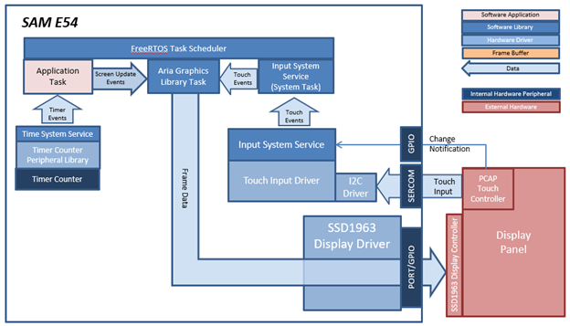

|
MPLAB® Harmony Graphics Suite
|
|
MPLAB® Harmony Graphics Suite
|

The application uses the Legato Graphics library to render text on a label widget, an image and a user-interactive button to the screen. Touching the button on the screen will show the button being pressed.
The SSD1963 display controller is used to send the display data and timing to a display. The SSD1963 is connected to the SAM E54 thru the PORT peripheral and GPIOs which are used to send 16-bit parallel data/commands and to bit-bang control signals to the SSD1963 controller, respectively. The frame buffer is stored externally in the SSD1963 controller.
User touch input on the display panel is received thru the PCAP capacitive touch controller, which sends a notification to the Touch Input Driver. The Touch Input Driver reads the touch information over I2C and sends the touch event to the Graphics Library thru the Input System Service.

The Project Graph diagram shows the Harmony components that are included in this application. Lines between components are drawn to satisfy components that depend on a capability that another component provides.
Adding the SAM E54 Curiosity Ultra BSP and Legato Graphics w/ PDA TM4301B Display Graphics Template component into the project graph will automatically add the components needed for a graphics project and resolve their dependencies. It will also configure the pins needed to drive the external peripherals like the display and the touch controller.
The parent directory for this application is gfx/apps/legato_quickstart. To build this application, use MPLAB X IDE open the gfx/apps/legato_quickstart/firmware/legato_qs_e54_cu_tm4301b_ssd1963.X project file..
The following table lists configuration properties:
| Project Name | BSP Used | Graphics Template Used | Description |
|---|---|---|---|
| legato_qs_e54_cu_tm4301b_ssd1963.X | SAM E54 Curiosity Ultra BSP | Legato graphics w/ PDA TM4301B Display | SAM E54 Curiosity Ultra w/ PDA TM4301B Display and SSD1963 display driver |
**_NOTE:_** This application may contain custom code that is marked by the comments // START OF CUSTOM CODE ... and // END OF CUSTOM CODE. When using the MPLAB Harmony Configurator to regenerate the application code, use the "ALL" merging strategy and do not remove or replace the custom code.
Configure the hardware as follows:
The demonstration will show the figure below on the display:
The final hardware setup should be:

Power up the board by connecting the power adapter to power connector or a powered USB cable to the DEBUG USB port on the board.
When power-on is successful, the demonstration will display a similar menu to that shown in the following figure (different configurations may have slight variation in the screen aspect ratio):

When Make changes. Generate. Run. is touched, the button will toggle with each individual touch.

 1.8.18
1.8.18